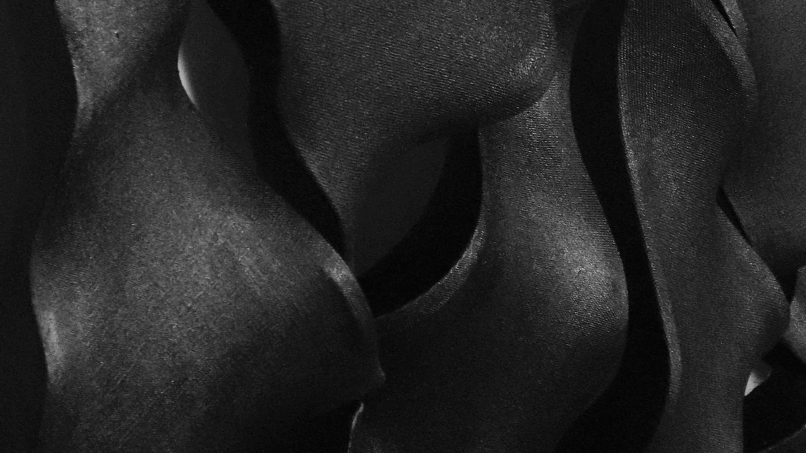

New York Asian Design Week — 2026
Traces
of Force
Traces of Force
At Gallery 456, New York Asian Design Week explores how material, technological, environmental, and cultural forces shape contemporary Asian design.
August 7–21
Exhibition 2026
Aug 7, 6–9 PM
Opening Reception
Gallery 456
456 Broadway, 3rd Floor
Curator
Lihan Jin
Artists
Sanghoon Bae · Kurt Cheang · Yue Fan · Runxin Fu · Lihan Jin · Niki Li · Jonathan Liang · Zida Liu · Yuhan (Celine) Song · Dirk Tsai · Kang Wang
Exhibition Statement
Traces of Force brings together nine works spanning architecture, painting, photography, installation, and furniture design. Presented as the inaugural Physical edition of New York Asian Design Week's two-year dialogue between the physical and the digital, the exhibition approaches form not as a finished appearance, but as evidence of an encounter. Matter bends, stretches, burns, settles, fractures, and resists. Bodies, identities, environments, and cultures are shaped through comparable processes. Each work begins with a force—structural, technological, emotional, environmental, or social—and considers the trace it leaves behind.
The exhibition unfolds through a series of pairings and correspondences, placing distinct materials and modes of production in conversation. Runxin Fu's Hejduk Lamp, fabricated through precisely programmed non-planar 3D printing, is presented alongside Celine Song's photographs of pottery making and kiln firing in Zhengjiayao Village. The contrast is immediate: one process choreographs the movement of a machine in pursuit of controlled precision, while the other preserves the minute variations of the hand—the pressure of fingers against clay, the repetition of inherited gestures, and the unpredictability of fire. Yet both reveal form as the accumulation of movement, heat, time, and knowledge. Rather than positioning technology and tradition as opposites, the pairing asks how different systems of making register the forces embedded within their production.
Material tension takes another form in Lihan Jin's Tension Instrument and Dirk Tsai's Tremor. In Tension Instrument, a taut metal string bends wood into an architectural prototype, translating acoustic and structural tension into spatial form. In Tremor, canvas behaves as skin stretched and folded over a constructed wooden skeleton, swelling beyond the conventional plane of painting. One work explores tension as a means of structural and musical harmony; the other understands deformation as an expression of bodily and psychological resistance. In both, bending is not applied as a stylistic gesture. It emerges as the visible consequence of matter negotiating with force.
The urban environment becomes the site of less visible pressures in three works that examine how contemporary cities are shaped by emotional, technological, and perceptual forces. Niki Li's Tension & Tranquility presents fragmented digital visions of New York that register emotional turbulence, insecurity, and social division. Yue Fan's Traces of Transparency projects these conditions into an augmented-reality future in which algorithms, advertisements, and personalized information continually rewrite architecture and public space. Sang Hoon Bae's two-meter-wide painting The Greater Archipelago extends this inquiry through an architectural perspective, translating his impressions of New York into a layered spatial and visual composition. Together, these works suggest that cities are shaped not only by concrete and steel, but also by anxiety, memory, data, commercial influence, identity, and attention. The urban image becomes unstable—a contested surface through which personal and collective realities are continually negotiated.
Moving from the urban environment to the natural landscape, SANKAI – Mountain / Ocean / In-Between reconsiders architecture's relationship with its surroundings. Situated between forested mountains and the Pacific Ocean, the project weaves together these contrasting landscapes through a centrally positioned, elevated structure that preserves the site's existing topography and water systems. A floating bridge marks the arrival, while the plan extends outward toward distinct environmental conditions: bedrooms face the forest for privacy and calm, the master suite hovers above a koi pond, and shared living spaces open toward the ocean. Rather than treating the landscape as a passive backdrop, the project allows water, vegetation, elevation, and distant views to actively shape architectural form.
In Kang Wang's The Boat, force is registered through collision and material transformation. Disposable takeout containers and bamboo chopsticks are pierced, crushed, melted, and fused with burned metal and forged nails. Familiar objects associated with consumption, cultural visibility, and disposability are subjected to heat and mechanical pressure, becoming records of conflict between externally imposed identities and the internal forces used to resist or transform them.
Across the exhibition, Asian design does not appear as a singular visual language or recognizable set of motifs. It emerges instead through negotiation: between precision and imperfection, inheritance and transformation, displacement and belonging, technological acceleration and material resistance. Cultural identity is not contained within an image or symbol, but formed through acts of making, adaptation, translation, and what is carried forward.
A trace is never the force itself. It is what remains after contact—an imprint, a deformation, a residue, a fracture, or a new orientation. Traces of Force invites viewers to encounter each work not simply as an object, image, or proposal, but as the material record of a process still unfolding.
Selected Works
Traces of Force
Nine works by eleven artists and designers examine how structural, technological, emotional, environmental, and social forces become visible through matter, image, space, and making.

Hejduk Lamp
Runxin Fu

Tremor
Dirk Tsai

Tension Instrument
Lihan Jin

The Boat
Kang Wang

One Kiln's Flame, Generations of Touch
Yuhan (Celine) Song

SANKAI – Mountain / Ocean / In-Between
Jonathan Liang, Kurt Cheang, Lihan Jin, Zida Liu

Tension & Tranquility
Niki Li

Traces of Transparency
Yue Fan
Image Pending
The Greater Archipelago
Sanghoon Bae
Opening Reception
Friday, August 7, 2026
6:00–9:00 PM
Gallery 456 / Chinese American Arts Council
456 Broadway, 3rd Floor · New York, NY 10013
Free and open to all. RSVP requested.
Partners & Supporters
This project is made possible in part with funds from Creative Engagement, a regrant program supported by the New York City Department of Cultural Affairs in partnership with the City Council, and the New York State Council on the Arts with the support of the Office of the Governor and the New York State Legislature, and administered by the Lower Manhattan Cultural Council.